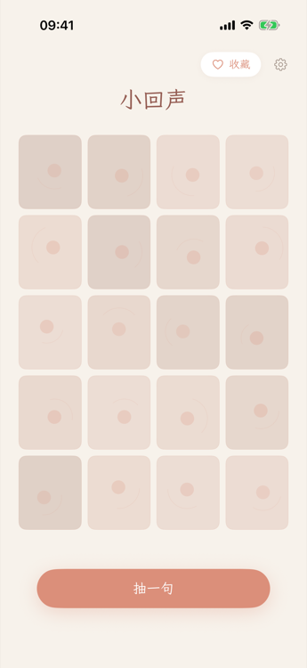
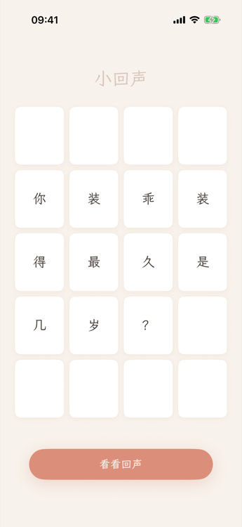
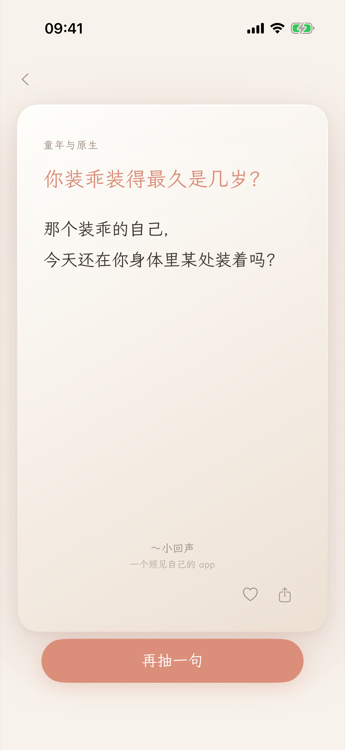

小回声是一个很轻的情绪整理仪式。打开它，抽一张卡，读一个温柔的提问和它的阐释——不给答案，只帮你把模糊的感觉说清楚。950 张原创卡片，14 个情绪主题，完全离线运行，不收集任何数据。



Android 首次安装可能需要在"设置 → 应用 → 安装未知来源"里临时允许浏览器/文件管理器安装。装好之后冷启动会自动检查新版本，有新版本会弹窗提示。
打开 app 你会看到 4×5 的小格子。点击"抽一句"，格子开始翻转，最终拼出一个温柔的提问。再点"看看回声"，卡片合并成一张大卡，给你一段简短的阐释。
读到触动你的句子，可以点心形收藏，或者点分享按钮把它发给朋友。收藏页可以按分类筛选。
小回声内置 950 张卡片，分为 14 个情绪主题：
小回声是做什么的？
一个轻量的情绪整理工具。不需要写日记、不需要注册——抽一张卡，读一个问题和它的阐释，让一句话帮你看清此刻的感受。
需要联网吗？
iOS 端完全离线，不发起任何网络请求。Android 端因为不走 Google Play，需要在 app 内拉一次版本清单来比对（每次冷启动，约 200 字节，只看版本号、不带任何标识）；除此之外都离线。详见隐私政策"网络访问"段。
我的数据会被上传吗？
不会。你的收藏和历史记录只存在你的手机上，我们不收集任何数据。详见隐私政策。
每次打开都有一个开屏页是什么？
每次冷启动会有一个 3 秒的开屏：「小回声·与自己仿若初见」，呼吸般淡入淡出。设计上希望你打开 app 不是立刻被信息扑上来，而是有一个小小的过渡。
分享出去的图片包含什么？
分享时小回声在本地生成一张包含卡片问题、阐释和分类标签的图片，配上"— 小回声"署名。图片不经任何服务器，只通过系统分享面板交给你选择的目标 app。
卸载后数据还在吗？
卸载会清除所有本地数据，包括收藏、抽卡历史和新手引导记录。重新安装后数据无法恢复。
可以重复抽到同一张卡吗？
可以。每次抽卡都是随机的，这是有意设计——同一个问题在不同时刻读到，感受可能完全不同。
支持深色模式吗？
支持。会自动跟随系统设置切换。
需要 iOS 多少版本？
iOS 17 或更高版本。